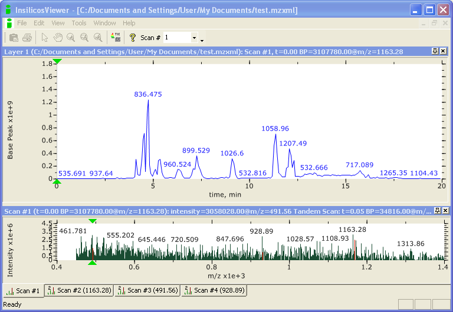

There are many different file formats for raw MS data, depending upon the manufacturer of the instrument. Several open, universal data formats for MS data have been developed, such as mzXML and the newer mzML. Typically, mass spectrometers do not generate data in these formats directly, but raw data can be converted to open formats using vendor-specific software.
A mzXML file is a XML-based (eXtensible Markup Language) file that uses Base-64 representation of the mz-intensity pairs to incorporate the large volumes of generated data into the XML format.

To simplify the identification process, mzXML files are often processed to simpler ASCII representations of the data, known as peak lists. There are several different peak list file formats (explained here). We will use the Mascot Generic Format (MGF) to analyze for peptides and proteins. The corresponding MGF file for the mzXML data file visualized above is here.
In the next section, we take peak list files and search sequence databases for matching peptides.
Further AnalysesTo get familiar with file formats, compare the number of MS/MS spectra in an MGF file and its corresponding mZXML file. |